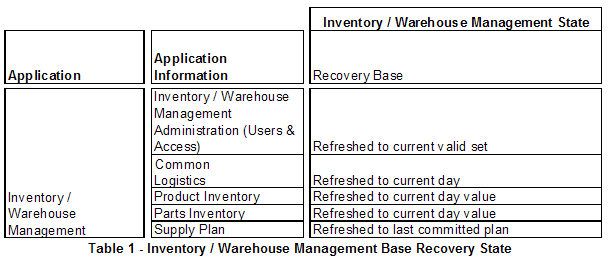
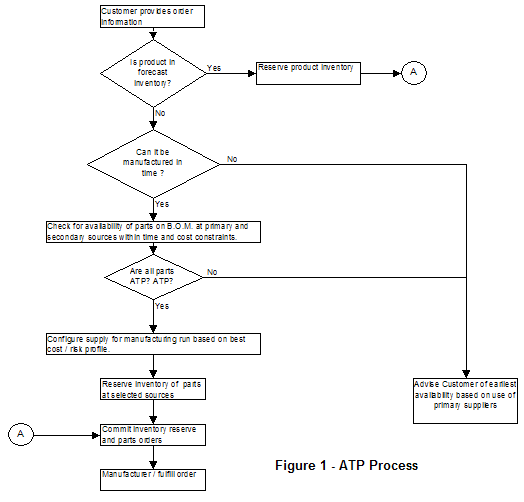
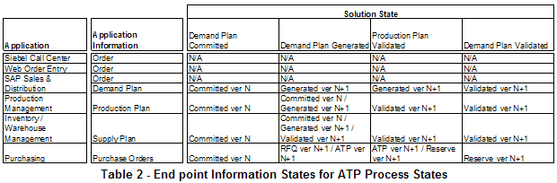
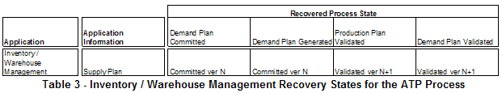
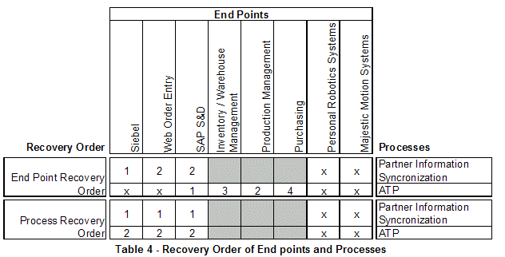

| Example: Solution Recovery Strategy |
 |
|
| Related Elements |
|---|
The manufacturer’s purchasing system issues requests for available to promise (ATP) commitments from these two suppliers based upon the proposed plan updates created by their fulfillment systems. This activity is performed under an ATP process that includes detection of the need for fulfillment planning changes, creation of plan updates, and commitment of suppliers to meet these revised plans. The relevant end points included in this ATP process are:
For brevity, this example depicts only Inventory / Warehouse Management application end point specific information. 1.1 Inventory / Warehouse Management End PointInventory / Warehouse Management Base Recovery StateTable 1 identifies the basic recovery information that must be in place within the Inventory / Warehouse Management Application prior to recovery of any of the business processes it participates in.  External State Instrumentation for Inventory / Warehouse ManagementInventory / Warehouse Management is a CICS on-line transaction application with a 3270 user interface that exercises a set of CPI & ECI callable functions. Application information is stored in a DB2 database. There is no explicit state keeping exposed by the function calls. As a result, the DB2 data stores must be examined to determine the current state of the application. 1.2 Available to Promise ProcessThe ATP process, depicted in Figure 1, is the focus of recovery for this example.  ATP Process Availability & Recovery Time ConstraintsThe ATP process is available 24x7x365; excluding a maintenance window that occurs 11PM Eastern Sunday through 12AM Pacific Monday. The allowable delay for an end-to-end ATP process is 2 hours. This process is executed an average once per week, peaking at once per day during a worst-case business load scenario. The most constraining element is the 2-hour ATP allowable delay. To minimize impact to the business the process recovery should be completed within one hour, including the initial recovery of the failed application to the base recovery state. In the worst-case scenario, that induces a 3-hour delay in the execution of the ATP process, which is acceptable as a rarely occurring event. Information States for Available to Promise (ATP) ProcessTable 2 indicates the key end point information states for the recoverable states of the Available to Promise (ATP) process in the business system. In several cases, multiple valid end point information states exist within the defined business process solution state.  Recovery States View for the Inventory / Warehouse Management Application in the ATP ProcessTable 3 identifies the states that the Supply Plan for Inventory / Warehouse Management must be returned to, in order to recover the ATP business process to the indicated states. Once the base state is achieved for Inventory / Warehouse Management, the Supply Plan is the only additional information entity that must be manipulated to recover the application to the proper state for the ATP process.  Process and End point Recovery Order for Partner Information Synchronization and ATPThis table depicts the desired order of recovery, for each end point within key Partner Information Synchronization and ATP processes. The x’s indicate where no order preference exists. The shaded cells indicate where end points do not participate in a process.  Use Case to Recover Demand Plan Generated State from Inventory / Warehouse Management Application Failure
This example use case depicts the recovery of the ATP process to the Demand Plan Generated State following the failure
of the Inventory / Warehouse Management application. It does not include the general preparation of Inventory /
Warehouse Management to participate in any business process. It assumes that the application is already in the state
reflected in Table 1.
Table 5 - ATP End point Recovery Use Case Example |
||||||||||||||||||||||||||||||||||||||||||||||||||||||||||||||||
| © Copyright IBM Corp. 1987, 2012 All Rights Reserved Property of IBM These materials are intended only for use as part of an IBM engagement |